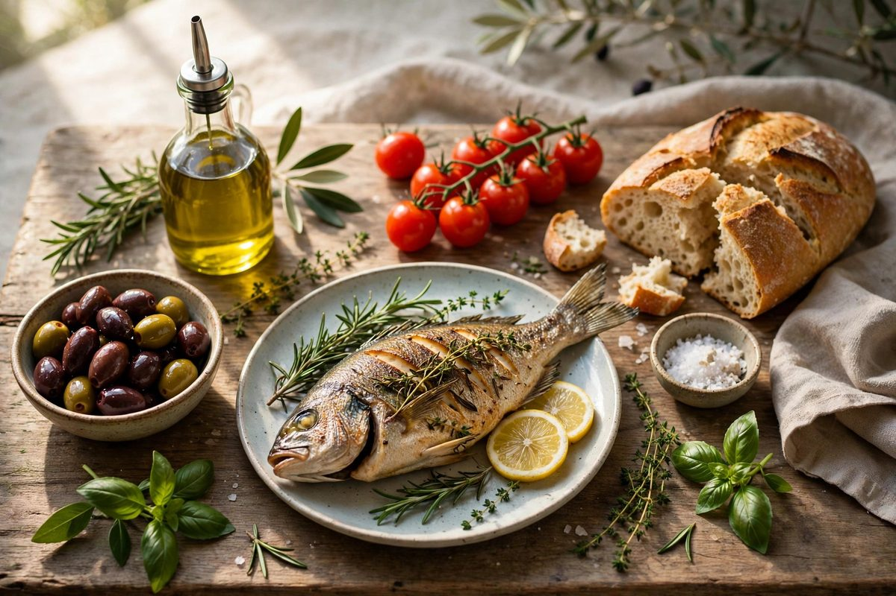

Home » Guides
Mediterranean Diet Basics

The Mediterranean diet is not a strict eating plan with rules and calorie counting. It is a pattern of eating based on the traditional foods of countries around the Mediterranean Sea — Greece, Italy, Spain, and southern France. It is one of the most studied diets in the world, and research consistently links it with better heart health, a lower risk of type 2 diabetes, and a longer life. This guide explains what it is, why it works, and how to begin.
What the diet looks like
At the centre of the Mediterranean diet are vegetables, fruits, whole grains, legumes, nuts, and seeds, eaten every day. Olive oil is the main source of fat. Fish and seafood appear at least twice a week, poultry and eggs a few times a week, and dairy — mainly yoghurt and cheese — in moderate amounts. Red meat is eaten rarely, and sweets and processed foods are occasional rather than daily. Herbs and spices replace salt for flavour, and water is the main drink, with wine in moderation at meals for those who drink it.
Why it is so well studied
The Mediterranean diet first drew scientific attention in the 1950s, when researchers noticed that people in Crete and southern Italy had remarkably low rates of heart disease despite eating a relatively high-fat diet. Decades of studies since then, including large randomised trials, have found that the pattern is linked with lower blood pressure, better cholesterol, healthier blood sugar, and less inflammation. Because the evidence is strong and consistent, health organisations around the world recommend it as one of the healthiest eating patterns.
How to start
Start with small, realistic changes rather than an overnight overhaul. Switch your cooking oil to extra virgin olive oil, add a vegetable to every meal, and eat legumes such as lentils or chickpeas three times a week. Aim for fish twice a week, choose wholegrain bread and pasta, and keep a bowl of fruit on the table for snacks. Cook at home more often, eat slowly, and share meals with family or friends when you can — the social side of eating is part of the tradition, not an afterthought.
Common misunderstandings
A common mistake is to think the Mediterranean diet is simply pasta and pizza. In the traditional pattern, pasta is a small portion served with vegetables, beans, or fish, not a large plate with heavy cream sauce. Another misunderstanding is that olive oil can be poured without limit; it is healthy, but it is still calorie-dense, so portions matter. The diet is also not a quick weight-loss plan. It supports a healthy weight over time, but the goal is a sustainable way of eating for life, not a short-term fix.
A day on the Mediterranean diet
A typical day on the Mediterranean diet might look like this. Breakfast is Greek yoghurt with honey and walnuts, with a piece of fruit. Lunch is a large salad with chickpeas and feta, with wholegrain bread and olive oil. An afternoon snack is a handful of almonds and an orange. Dinner is grilled fish with roasted vegetables and a small portion of pasta with tomato and basil. Water is the main drink, with a glass of wine at dinner for those who drink. The day includes vegetables at every meal, legumes, fish, whole grains, olive oil, and fruit — the whole pattern in one ordinary day, without any special effort or expensive ingredients.
Frequently Asked Questions
Is the Mediterranean diet good for weight loss?
It can support gradual weight loss because it is rich in fibre and satisfying foods, but it is not a rapid weight-loss diet. Portion sizes still matter, especially with olive oil, nuts, and cheese.
Do I have to eat fish to follow it?
Fish is an important part of the traditional pattern, but vegetarians can follow a Mediterranean-style diet using legumes, eggs, dairy, nuts, and seeds as protein sources.
Can I drink wine on the Mediterranean diet?
Moderate wine with meals is part of the tradition for those who already drink. It is optional, and there is no need to start drinking for health reasons.